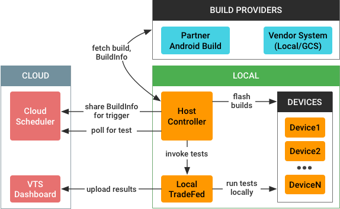

Android {{ androidPVersionNumber }} includes a Vendor Test Suite (VTS) infrastructure for automated testing of VTS, CTS, or other tests on partner devices running the AOSP generic system image (GSI). Previously, running these tests was a highly manual operation; the new VTS test infrastructure is designed to support automated testing multiple times a day on multiple devices.
The VTS automated testing infrastructure uses the following architecture:

When a test is triggered, the VTS automated testing infrastructure performs the following tasks:
The process is coordinated by the VTS host controller (HC), a machine in the lab that directs the behavior of all connected devices under test. The HC is responsible for fetching the latest builds, flashing them onto devices, and invoking tests (either locally or through the commander). It also communicates with a cloud scheduler and directs traffic between the scheduler and the TradeFed instance (or some other harness) running on the HC. For details on the host controller, see Host Controller Architecture.
Automated testing requires resources such as system builds, test files, and VTS artifacts. While it's possible to build these from source, it is easier to build them from tip-of-tree regularly then post the artifacts for download.
Partners can access automation resources using the following locations:
For use in flashing the devices later, resources include build providers for
both options, extending from a single build_provider.py that
stores the builds in local temporary directories.
In Android 8.1 and lower releases, Android partners were required to visit the Partner Android Build website (https://partner.android.com/build), navigate to their account, and fetch the latest system images through the user interface. To help partners avoid this slow and labor-intensive process, Android {{ androidPVersionNumber }} includes support for automatically downloading these resources from PAB when the appropriate credentials are provided.
Programmatic access uses OAuth2 on Google APIs to access the required RPCs.
Using the
standard
approach for generating OAuth2 credentials, the partner must set up a
client id/secret pair with Google. When the
PartnerAndroidBuildClient is pointed to that secret for the first
time, it opens a browser window for the user to log in to their Google
account, which generates the OAuth2 credentials needed to move forward. The
credentials (access token and refresh token) are stored locally, meaning
partners should need to login only once.
Clicking a resource link in PAB sends a POST request that includes the necessary data for that resource, including:
The POST request is received by the downloadBuildArtifact method
of the buildsvc RPC, which returns a URL that can be used to
access the resource.
To avoid cross-site request forgery, the buildsvc RPC requires an
XSRF token to be POSTed with the other parameters. While this token makes the
process more secure, it also makes programmatic access much harder since the
token (which is available only in the JavaScript of the PAB page) is now also
required for access.
To avoid this issue, Android {{ androidPVersionNumber }} redesigns the URL
naming scheme for all files (not just APKs) to use predictable URL names for
accessing artifact lists and artifact URLs. The PAB now uses a convenient URL
format that enables partners to download resources; HC scripts can download
those APKs easily, since the URL format is known, and HC can bypass the
XSRF/cookie issues because it does not need the buildsvc RPC.
Given a directory with a list (or zip file) of artifacts, the build provider sets the relevant images based on what's in the directory. You can use the gsutil tool to copy files from Google Cloud Storage to a local directory.
After the most recent device images are downloaded to the host, those images
must be flashed onto the devices. This is done using the standard
adb and fastboot commands and Python subprocesses,
based on the temporary file paths stored by the build providers.
Supported actions:
fastboot flash boot boot.img)fastboot flashall (using the built-in flashall
utility)fastboot flash (one at a time)In Android {{ androidPVersionNumber }}, the VTS automated testing infrastructure supports only the TradeFed test harness but could be extended to support other harnesses in the future.
After the devices are prepared, you can invoke tests using one of the following options:
test command in the host
controller, which takes the name of a VTS test plan (e.g.
vts-selftest) and runs the test.lease command in the host controller console, which looks for
unfulfilled test runs.If using TradeFedCluster, TradeFed runs locally as a remote manager. If not, the tests are invoked using Python subprocesses.
Test results are automatically reported to some VTS dashboard projects by
VtsMultiDeviceTest.